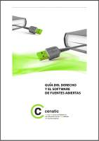

Libros e informes
Esta página contiene enlaces a libros e informes sobre software libre:
Rajiv Jhangiani, Robert Biswas-Diener (editores)
Página web: Open, en Ubiqity Press
Open The Philosophy and Practices that
are Revolutionizing Education and Science
2017 marzo
Descarga (PDF 19,7 MB inglés)
Richard Stallman
Página web: Blog de Richard Stallman
Free software, free society
2002 octubre
Descarga (PDF 2,31 MB inglés)
Software libre para una sociedad libre
2004 noviembre
Descarga (PDF 1,30 MB español)
Jordi Mas i Hernàndez
Página web: Jordi Mas

Software libre 1º ed.
2005 marzo
Descarga (PDF 1,08 MB español)
Programari lliure 2º ed.
2006 febrero
Descarga (PDF 1,08 MB Catalán)
Keith Curtis
Página web: Keith Curtis
After the software wars 1.029
2010 abril
Descarga (PDF 13,8 MB)
After the software wars 1.028
2009
Descarga (PDF 13,8 MB)
Libro blanco del software libre
Página web: Libro blanco del software libre
I Libro blanco del software libre
2004 enero
Descarga (PDF 0,99 MB)
II Libro blanco del software libre
2005 octubre
Descarga (PDF 9,20 MB)
III Libro blanco del software libre
2007 febrero
Descarga (PDF 816 KB)
CENATIC (Centro Nacional de Referencia de Aplicación de las TIC basadas en fuentes abiertas)
Página web: CENATIC
Informe 2008
2008 septiembre
Descarga (PDF 9,72 MB)

Guía básica del software de fuentes abiertas
2008 octubre
Descarga (PDF 23,8 MB)

Guía jurídica
2009 julio
Descarga (PDF 11,5 MB)
Autor: Bartolomé Sintes Marco
Última modificación de esta página: 5 de febrero de 2024